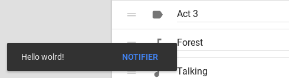

Notifier
A lightweight library to show paper-toast and paper-dialog alerts easily.

Usage
To use it you have to import notifier module.
import Notifier from '@myfrom/notifier';The module returns an initialised Notifier class on which you can use methods described in docs.
If you want to use non-module version, you should downgrade to version 1.x.x
Custom options
You can set custom options before you load Notifier by setting NotifierOptions on window. Here are the default values:
{
"elementsImported": false, // If set to true, Notifier won't attempt to load its dependencies (check 'Loading dependencies' section).
"stylesLoaded": false, // Same but it's about helper styles (check 'Helper styles section').
"mobileMediaQuery": ["(orientation: landscape) and (max-width: 960px)","(orientation: portrait) and (max-width: 600px)"] // To distinguish between phones and bigger devices. If changed you should also change it in styles.css
}Loading dependencies
Notifier relies on a few custom elements such as paper-dialog and paper-toast.
By default, they will be loaded using a dynamic import. You can ommit this loading attempt by setting elementsImported option to true (look above). However, if you do this and not import necessary files, Notifier will throw an error.
Here are all the necessary files for each function:
showToast()
- paper-toast
- paper-button (if includes a button)
showDialog()
- paper-dialog
- paper-dialog-scrollable
askDialog()
- paper-dialog
- paper-dialog-scrollable
- paper-button
Animations
- neon-animation/web-animations.html
- neon-animation/animations/fade-in-animation.html
- neon-animation/animations/fade-out-animation.html
- neon-animation/animations/slide-from-bottom-animation.html
- neon-animation/animations/slide-down-animation.html
They are also exported as an array from notifier module (elementsToImport).
Helper styles
Notifier relies on a few styles applied to paper-button in paper-toast. Those styles are not mandatory but ensure there are no weird bugs such as text overlapping with button, etc.
They're automatically loaded but you can skip that by setting stylesLoaded option to true). In such case you might want to manually add styles.css to your document.